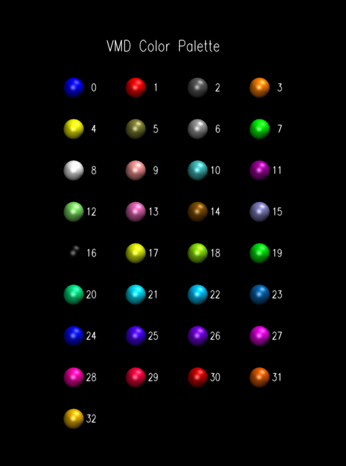
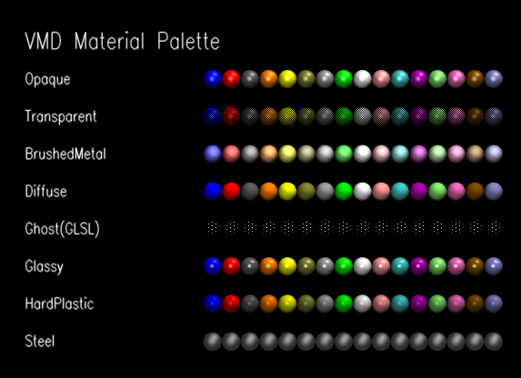

<!--#set var="TITLE" value="PaletteTool Plugin, Version 1.0"-->
<!--#include virtual="/Research/vmd/include/header-vmd.shtml"-->

<p>
The PaletteTool plugin provides an easy way to preview all of the
user defined colors and materials currently loaded.
The interface consists of three buttons.  When the color or material
palette is drawn, all other molecules are temporarily hidden.  When
the palette is deleted, all other molecules are restored.



<!--#include virtual="/Research/vmd/include/footer-vmd.shtml"-->

